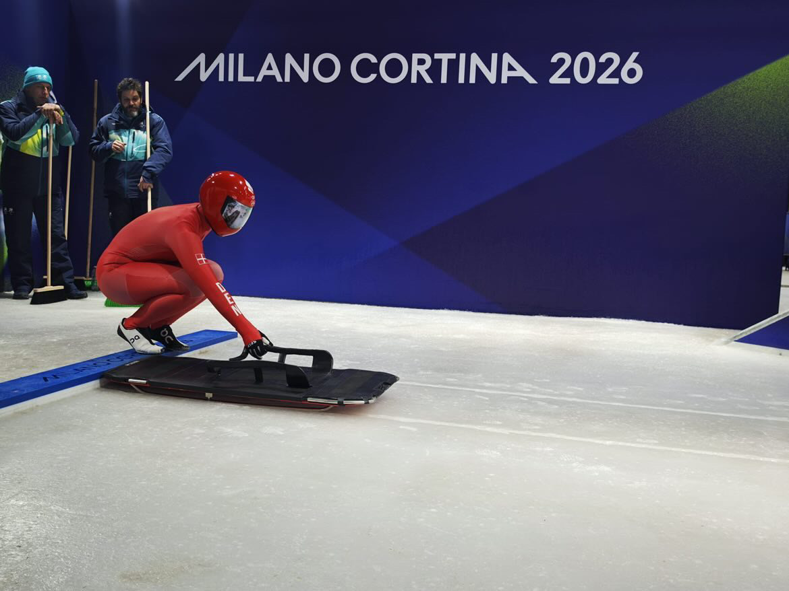
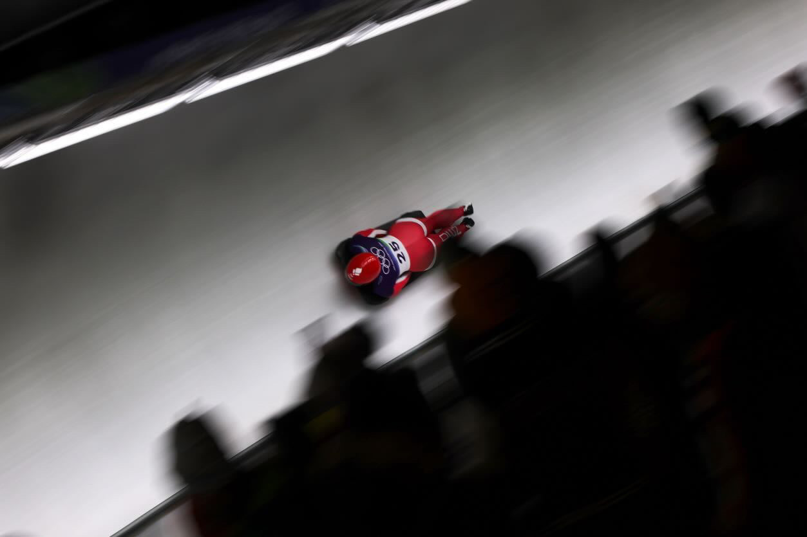
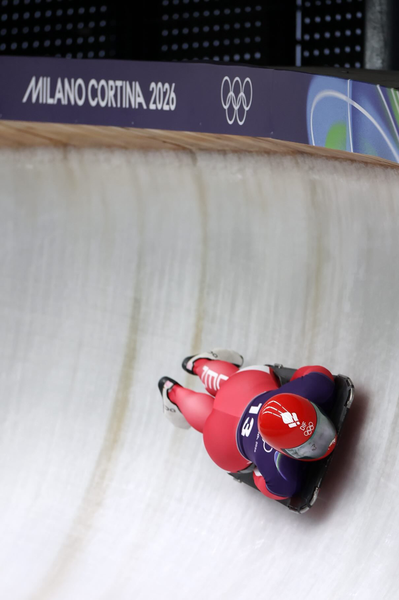

💀 Hvad er Skeleton? Den komplette guide
Forestil dig at kaste dig ned ad en isbane med hovedet først på en lille slæde – med hastigheder på over 130 km/t.
Det lyder måske som noget fra en actionfilm, men det er virkeligheden for verdens bedste skeleton-atleter.
Skeleton er en af de mest spektakulære og nervepirrende sportsgrene ved vinter-OL, men samtidig også en sport, som mange danskere kun møder hvert fjerde år.
Så hvad er skeleton egentlig?

💀 Hvad går skeleton ud på?
Skeleton er en individuel vintersport, hvor atleter kører ned ad en isbane på en lille slæde.
I modsætning til bobslæde og kælk ligger udøveren på maven med hovedet først.
Målet er simpelt: At komme hurtigst muligt fra toppen til bunden af banen.
Vinderen findes ofte med forskelle på få hundrededele af et sekund.
⚡ Hvor hurtigt går det?
Meget hurtigere end de fleste forestiller sig.
På de hurtigste baner i verden kan skeleton-atleter nå hastigheder på mellem 120 og 140 km/t.
Samtidig udsættes kroppen for kraftige G-påvirkninger i svingene, hvilket stiller enorme krav til både fysik og koncentration.

🏃 Hvordan starter et løb?
Et skeleton-løb begynder faktisk med en sprint.
Atleten løber ved siden af slæden i de første meter og hopper derefter op på den, inden turen ned gennem banen begynder.
Starten er ekstremt vigtig, da hundrededele af sekunder kan afgøre placeringerne.
🎯 Hvordan styrer man?
Det fascinerende ved skeleton er, at der hverken er rat eller bremser.
Atleten styrer slæden ved hjælp af små bevægelser med skuldre, hofter, knæ og kropsvægt.
De bedste udøvere bruger mange år på at lære præcis, hvordan slæden reagerer gennem de forskellige sving.

❄️ Hvorfor hedder det skeleton?
Navnet stammer fra slutningen af 1800-tallet.
En tidlig version af slæden havde en åben konstruktion, som mindede om et skelet – på engelsk "skeleton".
Navnet hænger ved den dag i dag.
🌍 Hvor dyrkes sporten?
Skeleton dyrkes primært i lande med adgang til isbaner.
Mange af verdens bedste atleter kommer fra blandt andet Storbritannien, Tyskland, Canada, USA og Schweiz.
Sporten er en fast del af vinter-OL og har oplevet stigende popularitet gennem de seneste årtier.
🇩🇰 Kan man dyrke skeleton i Danmark?
Det korte svar er nej – i hvert fald ikke på en rigtig bane.
Danmark har ingen olympisk isbane til skeleton, kælk eller bobslæde.
Danske udøvere må derfor rejse til udlandet for at træne og konkurrere.
Det gør præstationerne endnu mere imponerende, når danske atleter formår at konkurrere med verdenseliten.
⭐ Danmarks skeleton-profil
En af de mest spændende danske profiler i sporten er Nanna Vestergaard Johansen.
Hun har repræsenteret Danmark internationalt og arbejder hver dag på at udvikle sig i en sport, som de færreste danskere overhovedet kender til.
Hendes historie viser, hvor langt passion, mod og hårdt arbejde kan føre en atlet – selv i en sport uden danske baner.